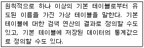
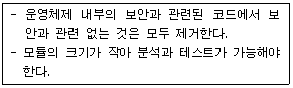

네트워크관리사-1급 (2004-05-09 기출문제)
1과목: TCP/IP
1. TCP에 대한 설명 중 맞는 것은?
- IP는 데이터의 배달을 관장하고, TCP는 데이터 패킷을 추적 관리한다.
- 비연결 지향형 프로토콜이다.
- OSI 통신 모델에서 세션 계층에 속한다.
- 데이터 전송에 있어 신뢰성을 제공하지 않는다.
(정답률: 알수없음)

2. Windows 2000에서 호스트의 TCP/IP 설정을 확인하는데 사용되며 인터페이스가 패킷 수신을 대기 중인지 혹은 동작중인지의 여부와 현재 물리적 인터페이스에 할당된 인터넷 주소 같은 정보를 판단하기 위해 사용하는 유틸리티는?
- ipconfig
- ping
- traceroute
- nslookup
(정답률: 50%)
3. 프로토콜에 대한 설명 중 잘못된 것은?
- IP(Internet Protocol) : 인터넷을 통해 패킷을 한 호스트에서 다른 호스트로 이동시키는데 이용되는 연결형 데이터 전달 서비스를 제공한다.
- ICMP(Internet Control Message Protocol) : 호스트 서버와 인터넷 게이트웨이 사이에서 메시지를 제어하고 에러를 알려준다.
- ARP(Address Resolution Protocol) : 두 호스트가 같은 물리적 네트워크 상에 있을 때 근원지 호스트가 목적지 호스트로 직접 데이터를 전달할 수 있도록 도와준다.
- RARP(Reverse Address Resolution Protocol) : 아직 자신의 인터넷 주소를 갖지 못한 호스트가 이를 얻도록 해준다.
(정답률: 46%)
4. 10.0.0.0/8 인 네트워크에서 115개의 서브넷을 만들기 위해 필요한 서브넷 마스크는?
- 255.0.0.0
- 255.128.0.0
- 255.224.0.0
- 255.254.0.0
(정답률: 24%)
5. 서브넷 마스크(Subnet Mask)에 대한 설명 중 올바른 것은?
- IP주소에서 네트워크 어드레스와 호스트 어드레스를 구분하는 기능을 수행한다.
- 하나의 네트워크를 두 개 이상의 네트워크로 나눌 수 없다.
- 어드레스는 효율적으로 관리하나 트래픽 관리 및 제어가 어렵다.
- 불필요한 브로드캐스트 메시지는 제한할 수 없다.
(정답률: 알수없음)
6. IP Header Fields에 대한 내용 중 잘못된 것은?
- Version - 4 bits
- TTL - 16 bits
- Type of Service - 8 bits
- Header Length - 4 bits
(정답률: 알수없음)
7. 라우터를 경유하여 다른 네트워크로 갈 수 있는 프로토콜은?
- NetBIOS
- NetBEUI
- IPX
- TCP/IP
(정답률: 64%)
8. IP주소 할당에 대한 설명으로 잘못된 것은?
- 198.34.45.255는 개별 호스트에 할당 가능한 주소이다.
- 127.0.0.1은 로컬 루프백으로 사용되는 특별한 주소이다.
- 167.34.0.0은 네트워크를 나타내는 대표 주소이므로 개별 호스트에 할당할 수 없다.
- 220.148.120.256은 사용할 수 없는 주소이다.
(정답률: 알수없음)
9. UDP(User Datagram Protocol)의 설명으로 잘못된 것은?
- TCP와는 달리 메시지를 패킷 단위로 나누어 전송하고 수신측에서 재조립하는 것 등이 불가능하다.
- 도착하는 데이터의 패킷 순서를 제공하지 않는다.
- 교환해야할 데이터가 매우 적은 네트워크 응용프로그램을 만들 때 TCP보다 처리 속도가 빠르다.
- 오류를 검사하여 오류가 있을 때 송신측으로 재전송을 요구한다.
(정답률: 70%)
10. ARP와 RARP에 대한 설명으로 잘못된 것은?
- RARP는 로컬 디스크가 없는 네트워크상에 연결된 시스템에도 사용된다.
- ARP는 IP데이터그램을 정확한 목적지 호스트로 보내기 위해 IP에 의해 보조적으로 사용되는 프로토콜이다.
- RARP는 IP 주소를 알고 있는 상태에서 그 IP 주소에 대한 MAC 주소를 알아낼 때 사용한다.
- ARP와 RARP의 패킷 구조는 동일하다.
(정답률: 84%)
11. 브로드캐스트(Broadcast) 어드레스에 대한 설명 중 올바른 것은?
- 어떤 특정 네트워크에 속한 모든 노드에 대하여 데이터 수신을 지시할 때 사용한다.
- 단일 호스트에 할당이 가능하다.
- 서브네트워크로 분할할 때 이용된다.
- 호스트의 Bit가 전부 ‘0’일 경우이다.
(정답률: 84%)
12. Telnet에 대한 설명 중 잘못된 것은?
- 원격지의 호스트에 접속하여 프로그램이나 파일을 사용할 수 있는 인터넷 서비스 이다.
- TCP/IP를 기반으로 한다.
- 초기 ARPANET 서비스용으로 개발되었다.
- 사용하려는 호스트에 로그인을 하지 않아도 호스트를 사용할 수 있다.
(정답률: 82%)
13. OSI 7계층 표준 모델을 기초로한 TCP/IP 프로토콜에 대한 설명 중 잘못 된 것은?
- 데이터 링크 계층 : OS의 네트워크 카드의 디바이스 드라이버 등 여기서는 하드웨어와 관련된 모든 것을 해결한다.
- 네트워크 계층 : 네트워크상의 패킷의 이동과 관련된 일을 하는데, IP가 이에 포함된다.
- 트랜스포트 계층 : 상위의 계층에서 볼 때 두 개의 호스트간의 자료의 흐름을 가능하게 하는데 TCP와 UDP가 이에 포함된다.
- 프리젠테이션 계층 : 코드 체계가 다른 컴퓨터간의 코드 변환이나, 데이터 압축 등의 역할을 담당한다.
(정답률: 70%)
14. 멀티캐스트 라우터에서 멀티캐스트 그룹을 유지할 수 있도록 메시지를 관리하는 프로토콜은?
- ARP
- ICMP
- IGMP
- FTP
(정답률: 85%)
15. 인터넷의 잘 알려진 포트(Well-Known Port)로 맞지 않는 것은?
- TFTP : 68
- FTP : 21
- TELNET : 23
- FINGER : 79
(정답률: 60%)
16. IP Address가 B 클래스이고 전체를 하나의 네트워크망으로 사용하여야 할 때, 적용해 주어야 하는 서브넷마스크(Subnet Mask)의 값은?
- 255.0.0.0
- 255.255.0.0
- 255.255.255.0
- 255.255.255.255
(정답률: 64%)
2과목: 네트워크 일반
17. 네트워크 ID와 호스트 ID를 할당할 때 적용되는 규칙으로 잘못된 것은?
- 같은 네트워크 구획상의 호스트는 똑같은 네트워크 ID를 갖는다.
- 네트워크 구획상의 각 호스트는 유일한 호스트 IP 어드레스를 갖는다.
- 네트워크 ID가 ‘127’로 시작하는 주소는 공인 IP 어드레스로 할당 받을 수 없다.
- 네트워크 ID의 비트(bit)가 모두 ‘1’일 때는 지역 네트워크(Local Network)를 의미한다.
(정답률: 60%)
18. HDLC 커맨드 응답 중 감독 프레임(Supervisory Frame)이 아닌 것은?
- Receive Ready(RR)
- Disconnect(DISC)
- Receive Not Ready(RNR)
- Selective Reject(SREJ)
(정답률: 55%)
19. 광섬유의 특징 중 잘못된 것은?
- 광섬유 표면에 상처가 있을 때 파단고장이 발생할 수 있다.
- 광부품의 제조에 미세 가공이 요구되며 접속이 어렵다.
- 광중계기의 전원 공급은 코어를 이용함으로 편리하다.
- 손실 및 분산 현상이 생길 수 있다.
(정답률: 알수없음)
20. SHDSL의 기술적 특성이 아닌 것은?
- 유연성
- 경제성
- 전송거리 확대
- 낮은 데이터 전송률
(정답률: 55%)
21. 세션계층에서 제공하는 기능은?
- 대화제어
- 데이터변환
- 데이터 압축
- 암호화
(정답률: 알수없음)
22. 패킷에 대한 설명으로 잘못 된 것은?
- 데이터와 흐름제어 신호가 포함된 비트들의 그룹이다.
- TTL은 패킷이 네트워크 내에서 너무 오래 있어서 버려져야 하는지의 여부를 나타낸다.
- 패킷은 옵션에 따라 52, 64, 128, 256 바이트 등의 크기를 가진다.
- 패킷의 일반적인 표준 크기는 64 바이트이다.
(정답률: 40%)
23. 기가비트이더넷(Gigabit Ethernet)의 특징 중 잘못된 것은?
- IEEE 803.3에 표준으로 정의되어 있다.
- 전송방식으로 기존 이더넷상의 CSMA/CD를 그대로 사용한다.
- 기존 이더넷상의 전송 속도를 초당 1기가비트까지 향상시킨 것이다.
- 기업의 백본(Backbone)망으로도 사용된다.
(정답률: 28%)
24. 전송부호의 표준부호에 해당하지 않은 것은?
- ASCⅡ
- BAUDOT
- BIT
- EBCDIC
(정답률: 54%)
25. ATM(Asynchronous Transfer Mode)에 대한 설명 중 잘못된 것은?
- 데이터를 53 바이트의 셀 또는 패킷으로 나눈다.
- 소프트웨어보다는 하드웨어로 더 쉽게 구현되도록 설계되었다.
- 동기식 전송 모드를 사용한다.
- BISDN(광대역 종합정보통신망)의 핵심 기술 중 하나 이다.
(정답률: 알수없음)
26. ARQ 중 에러가 발생한 블록 이후의 모든 블록을 재전송하는 방식은?
- Go-back-N ARQ
- Stop-and-Wait ARQ
- Seletive ARQ
- Adaptive ARQ
(정답률: 46%)
27. LAN 관련 표준안과 그 내용이 다르게 짝지어진 것은?
- IEEE 802.2 - LLC
- IEEE 802.3 - CSMA/CD
- IEEE 802.5 - Token Bus
- IEEE 802.6 - MAN
(정답률: 알수없음)
3과목: NOS
28. Windows 2000의 하드 디스크 관리에 대한 설명 중 옳지 않은 것은?
- 미러 세트는 데이터를 인터넷상의 해커로부터 보호하기 위한 기능이다.
- 명령 프롬프트에서 convert 명령을 사용하면 데이터의 손상 없이 FAT를 NTFS로 바꿀 수 있다.
- 볼륨세트는 작은 빈 공간들을 모아 하나의 큰 논리 드라이브를 구성하는 것을 말한다.
- 확장 분할 영역을 지우려면 먼저 확장 분할 영역내의 논리 드라이브를 모두 삭제해야 한다.
(정답률: 55%)
29. Windows 2000 Server에서 서버의 이름이 “SERVER"이고 인터넷을 통해 인터넷 서비스를 익명으로 엑세스하여 이용하고자 할 때 기본적으로 사용되는 계정명은?
- IUSR_SERVER
- VUSR_SERVER
- IWAM_SERVER
- Guest_SERVER
(정답률: 37%)
30. MS-SQL Server 2000에서 데이터를 백업하려고 할 때 백업의 내용과 설명이 잘못 연결된 것은?
- 풀백업 - 데이터 전체를 백업하는 것이다. 다른 방법의 백업을 하기 전에 풀백업을 먼저 해주어야 한다.
- 트랜잭션 로그 백업 - 트랜잭션 로그만을 백업한 후 로그를 절단한다.
- 디퍼런셜 백업 - 마지막 풀 백업이후 변경된 데이터 페이지를 백업한다.
- 파일/파일그룹백업 - 데이터베이스의 전체 로그를 백업 한다.
(정답률: 알수없음)
31. 리눅스에서 “gzip”의 압축해제 옵션은?
- -a
- -d
- -l
- -v
(정답률: 알수없음)
32. DNS가 URL ‘icqa.or.kr'을 IP Address ‘192.168.0.1'로 서비스하고 있을 때 DNS 설정 항목을 수정하여 ‘test.icqa.or.kr’로 외부에 서비스할 수 있는 방법은?
- DNS MX레코드를 추가한다.
- DNS A레코드를 추가한다.
- DNS REVERSE영역을 추가한다.
- 서비스 할 수 없다.
(정답률: 30%)
33. Windows 2000 서버에서 감사정책을 설정하고 기록을 남길 수 있는 그룹은?
- Administrators
- Security Operators
- Backup Operators
- Audit Operators
(정답률: 50%)
34. SQL문인 “SELECT * FROM 영업부;”의 의미로 옳은 것은?
- 영업부 테이블에서 첫번째 레코드의 모든 필드를 검색하라.
- 영업부 테이블에서 마지막 레코드의 모든 필드를 검색하라.
- 영업부 테이블에서 전체 레코드의 모든 필드를 검색하라.
- 영업부 테이블에서 ' * ' 값이 포함된 레코드의 모든 필드를 검색하라.
(정답률: 80%)
35. 리눅스에서 Windows 시스템과 리눅스 간에 파일 및 프린트 공유 등을 할 수 있게 하는 데몬은?
- Winshare
- Samba
- Silk
- NTlink
(정답률: 알수없음)
36. IP주소를 NetBIOS 컴퓨터 이름으로 풀이하는데 사용되며, 텍스트 에디터를 이용하여 편집할 수 있는 파일은?
- LMHOSTS
- HOSTS
- BOOTP
- NetBEUI
(정답률: 알수없음)
37. Windows 2000 Server에서 파일 및 프린터 서버를 지원하기 위해 반드시 설치해야하는 네트워크 프로토콜은?
- SMTP
- TCP/IP
- NNTP
- ICMP
(정답률: 알수없음)
38. DNS 레코드 중 IP Address를 HostName으로 변환하는 레코드는?
- SOA
- A
- PTR
- CNAME
(정답률: 알수없음)
39. Windows 2000 Server의 터미널 서비스를 이용할 때 얻어지는 장점이 아닌 것은?
- 원격지의 컴퓨터를 직접 사용할 수 있다.
- 클라이언트의 작업을 감시 할 수 있다.
- 전체적인 TCO의 감소가 가능하다.
- Windows 2000 Server의 기본 설치 시 포함이 되므로 별도의 설정이 필요 없이 서비스의 사용이 가능하다.
(정답률: 알수없음)
40. Windows 2000 도메인 컨트롤러에 대한 설명으로 잘못된 것은?
- SAM 데이터베이스를 이용하여 로그온 인증을 한다.
- 도메인 사용자들이 자원을 공유할 수 있도록 도와준다.
- 맨 처음 생성되는 도메인 컨트롤러에 Ntds.dit라는 파일이 생성된다.
- 사용자의 인증작업 및 로그온 과정을 담당한다.
(정답률: 알수없음)
41. 아파치 서버의 설정파일인 ‘httpd.conf’의 항목에 대한 설명 중 잘못된 것은?
- KeepAlive On : HTTP에 대한 접속을 끊지 않고 유지한다.
- StartServers 5 : 웹서버가 시작할 때 다섯번째 서버를 실행 시킨다.
- MaxClients 150 : 한번에 접근 가능한 클라이언트의 개수는 150개 이다.
- Port 80 : 웹서버의 접속 포트 번호는 80번이다.
(정답률: 70%)
42. 리눅스에서 게이트웨이를 추가 또는 삭제하려고 할 때 사용되는 명령어는?
- route
- ipconfig
- ping
- passwd
(정답률: 73%)
43. 리눅스에서 ‘hostname’ 명령어에 대한 옵션 설명 중 잘못된 것은?
- -v: 호스트 네임 출력
- -d: 호스트 네임 변경
- -a: 호스트 네임에 대한 별칭 이름 출력
- -i: 호스트 네임에 대한 IP 출력
(정답률: 알수없음)
44. SQL Server 데이터베이스 객체 중 다음이 설명하는 것은?

- ODBC
- 뷰
- 저장 프로시저
- ActiveX 데이터
(정답률: 90%)
45. 리눅스의 vi 에디터에 대한 설명으로 잘못된 것은?
- 입력모드로 전환은 ‘i’를 눌러서 한다.
- 편집모드로 전환하기 위해서는 ‘esc’ 키를 누르고 ':'(콜론)을 입력하면 된다.
- 기능키 ‘A’는 입력모드로 전환되어 현재 라인의 끝에 입력이 된다.
- 기능키 ‘a’는 입력모드로 전환되어 현재 라인의 위 라인에 입력이 된다.
(정답률: 알수없음)
4과목: 네트워크 운용기기
46. 매체의 대역폭을 작은 것에서 부터 큰 순서대로 바르게 배열한 것은?
- Twisted pair - Fiber optics - Coaxial cable
- Fiber optics - Coaxial cable - Twisted pair
- Coaxial cable - Twisted pair - Fiber optics
- Twisted pair - Coaxial cable - Fiber optics
(정답률: 알수없음)
47. Cisco2501 라우터에서 구성파일(Configuration files)이 저장되어 있는 장소로 전원이 차단되더라도 구성 파일을 항상 유지하고 있는 곳은?
- ROM
- RAM
- Flash ROM
- NVRAM
(정답률: 알수없음)
48. 비용은 증가하나 다중 사용자 시스템에서 최고의 성능과 최고의 고장대비 능력을 발휘하는 RAID 구성 방식은?
- RAID 1
- RAID 2
- RAID 3
- RAID 5
(정답률: 알수없음)
49. 데이터의 무결성을 구현하는 방법 중 소프트웨어적인 기법만으로 구현 가능한 것은?
- 디스크 미러링(Disk Mirroring)
- 서버의 이중화(Dual Server)
- 핫 스탠바이(Hot Standby)
- 리커버리 블록(Recovery Block)
(정답률: 40%)
50. Repeater의 특징이 아닌 것은?
- 회선상의 전자기 또는 광학 신호를 증폭하여 네트워크의 길이를 확장할 때 쓰인다.
- OSI 7계층 중 물리적 계층에 해당하며 두 개의 포트를 가지고 있어 한쪽 포트로 들어온 신호를 반대 포트로 전송한다.
- Hub에 Repeater 회로가 내장되어 Repeater를 대신하여 사용하는 경우가 있다.
- 단일 네트워크에는 여러 대의 Repeater를 사용 할 수가 없다.
(정답률: 알수없음)
5과목: 정보보호개론
51. 시스템에 침투 형태 중 IP주소를 접근 가능한 IP주소로 위장하여 침입하는 방식은?
- Sniffing
- Fabricate
- Modify
- Spoofing
(정답률: 31%)
52. 방화벽의 일반적인 구성 요소라고 볼 수 없는 것은?
- 베스천 호스트(Bastion Host)
- 방어선 네트워크(Perimeter Network)
- 프락시 서버(Proxy Server)
- 스크리닝 라우터(Screening Router)
(정답률: 알수없음)
53. 디지털 서명의 필수 요건이 아닌 것은?
- 재사용 가능
- 서명자 인증
- 변경 불가
- 위조 불가
(정답률: 알수없음)
54. 시스템에 존재하는 파일에 대해 데이터베이스를 만들어 저장한 후 생성된 데이터베이스와 비교하여 추가·삭제되거나 변조된 파일이 있는지 점검하고 관리자에게 레포팅해주는 무결성 검사도구는?
- TRIPWIRE
- Nmap
- CIS
- TCP-Wrapper
(정답률: 알수없음)
55. Windows 2000 Server에서 지원하는 PPTP(Point-to-Point Tunelling Protocol)에 대한 설명으로 옳은 것은?
- IP 기반의 네트워크에서만 사용가능하다.
- PPTP 헤드 압축을 지원한다.
- IPSec을 사용하지 않아도 터널 인증을 지원한다.
- PPP 암호화를 지원하지 않는다.
(정답률: 알수없음)
56. 다음이 설명하는 보안 등급은?

- A1 등급
- B2 등급
- B3 등급
- D 등급
(정답률: 37%)
57. 비밀키 암호화 기법에 대한 설명 중 가장 거리가 먼 것은?
- 두 사람이 똑같은 키를 소유해야한다.
- 암호화 알고리즘은 간단하고 편리하지만 관리하기가 어렵다.
- 전자서명과 같은 보안 시스템에 많이 사용된다.
- 키는 각 메시지를 암호화하고 복호화 할 수 있도록 전달자에 의해 공유될 수 있다.
(정답률: 알수없음)
58. "정보보호 표준용어" 용어에 대한 설명이 올바른 것은?
- 대칭형 암호 시스템(Symmetric Cryptographic System) : 비밀 함수를 정의하는 비밀키와 공개 함수를 정의하는 공개키들의 쌍
- 복호(Decipherment) : 시스템 오류 이후에 시스템과 시스템 내의 데이터 파일을 재 저장하는 행위
- 공개키(Public Key) : 정보시스템을 사용하기 전 또는 정보를 전달할 때, 사용자를 확인하기 위해 부여된 보안 번호
- 데이터 무결성(Data Integrity): 데이터를 인가되지 않은 방법으로 변경할 수 없도록 보호하는 성질
(정답률: 알수없음)
59. SET(Secure Electronic Transaction)에 대한 설명 중 잘못된 것은?
- 초기에 마스터카드, 비자카드, 마이크로소프트, 넷스케이프 등에 의해 후원되었다.
- 인터넷상에서의 금융 거래 안전을 보장하기 위한 시스템이다.
- 메시지의 암호화, 전자증명서, 디지털서명 등의 기능이 있다.
- 전체적으로 볼 때 비밀키 암호화 방식을 통해 안전성을 보장해 준다.
(정답률: 64%)
60. 공개키 암호화 방식에 대한 설명 중 옳은 것은?
- 키가 하나만 사용된다.
- 수신된 데이터의 부인 봉쇄 기능은 지원하지 않는다.
- 전자 서명의 구현이 가능하다.
- 비밀키 암호화 방식보다 처리 속도가 빠르다.
(정답률: 알수없음)